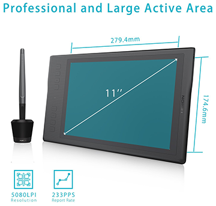

My Tablet, Art, and an Old Design
Huion Tablet
Image from Amazon.com's listing for the Huion Q11k
(Hover over squares for quick definition links)
Graphics Tablet
The image and following text are taken directly from Amazon.com's listing for the Huion Inspiroy Q11k:
- 8192 Pen Pressure Levels - A revolutionary upgrade delivering the ultimate accuracy and advanced performance; Wispy hairlines or thick strokes, precise as you intended.
- New Pen - The new rechargeable PF150 pen is elegantly designed with the perfect size and weight, providing a better grip and a more natural drawing experience. You can also simply unscrew the pen stand to use the built-in nib extractor.
- Wireless connectivity gives you an amazing cable-free work experience making for a tidier desktop environment at work. 8 Customizable Shortcut Keys: New easy to use press keys to keep your favorite functions close to you for more efficiency.
- Huge Active Area -11 inch of drawing area made with high end materials giving you a large working space as well as a paper-like finish. High Capacity Battery: A 2500mAh built-in battery provides over 40 hours battery life, no need to worry the digital drawing tablet shutting down or running out of juice.
- Ergonomic Design - Curvy edges, round corners and smooth surface, Q11K’s ergonomic design aims to provide extra comfort to our customers. You can comfortably rest your arm on the edge, reducing all the tiredness caused by long working hours and let yourself concentrate on your work.
Source: Amazon.com (Huion Q11k)
Graphics Tablet Art
I had gotten that tablet as a gift last Christmas and decided to test it out. While I've had a lot of experience with digital art in the past (mostly photo manipulation and website design stuff), this was the first time I was able to use a digital tablet as a drawing board. After roughly a half hour or so, I managed to doodle a decent picture of an apple, as you can see to the right.
Very Old Digital Art
When I was about 13 (around 2001), I started learning HTML. To keep me interested, I decided to make a fan-site for a video game series, as they were relatively popular at the time. Seeing as I was addicted to the Legend of Zelda games, I chose that and got my foot in the door within the "Zelda community". After years of keeping the site afloat (...mostly), I became better and better at HTML, CSS, and Photoshop, and later got into other languages as well. To the left is a screenshot of the last layout I made for the site prior to me shutting it down. Although the image shows that it was taken in 2009, I think I actually made it in 2008, as that screenshot was just a dummy-page I made for a quick reference for the future (well, present now).
Even though I made it about 10 years ago, and I didn't "draw" the individual artwork inside of the picture (it uses some "official art"), it's still one of my favorite project results. That tiled background was a pain to properly make...
Most websites now focus on Web 2.0 standards, which has had an impact on "creative" looking websites. Nowadays, it seems that most pages look like a version of a Wordpress theme.